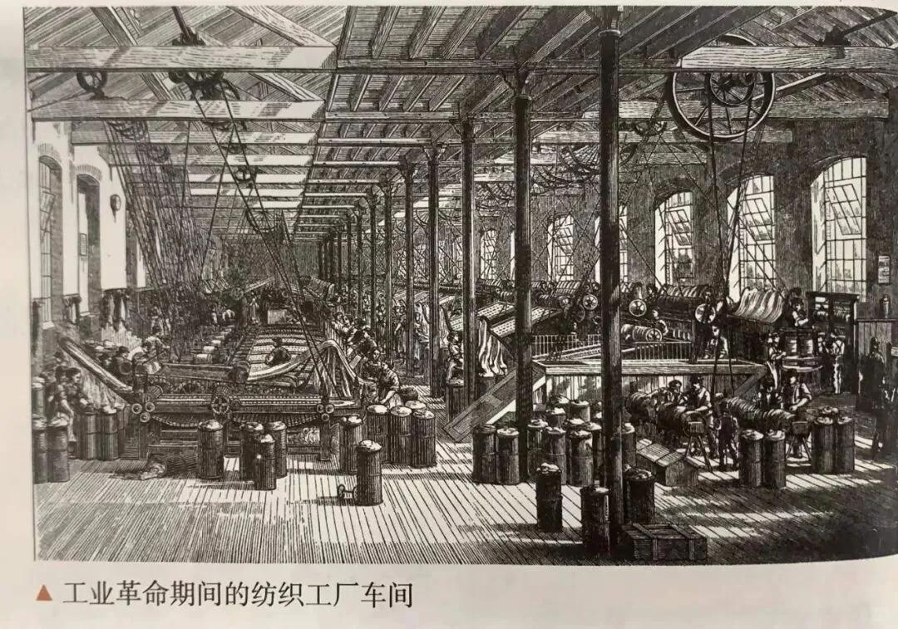
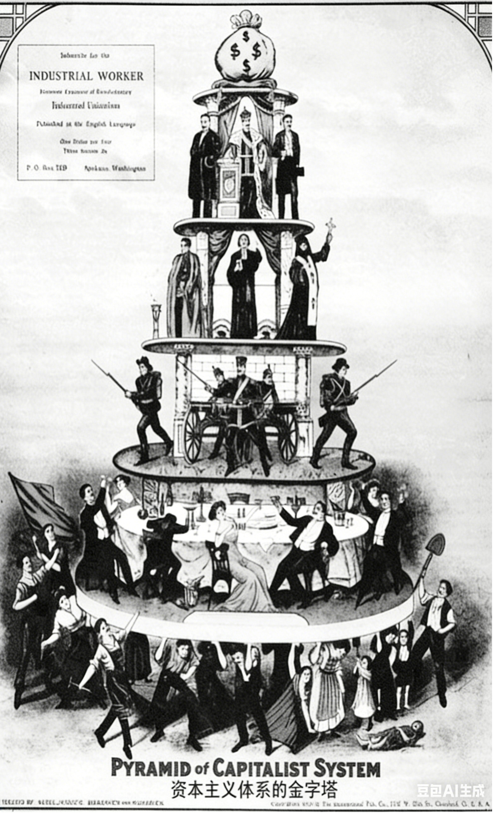
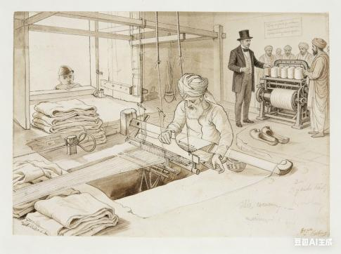
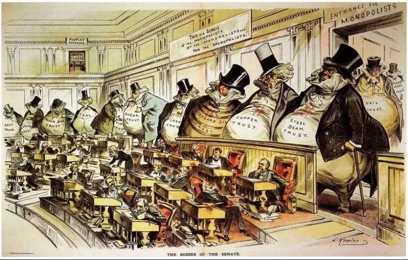
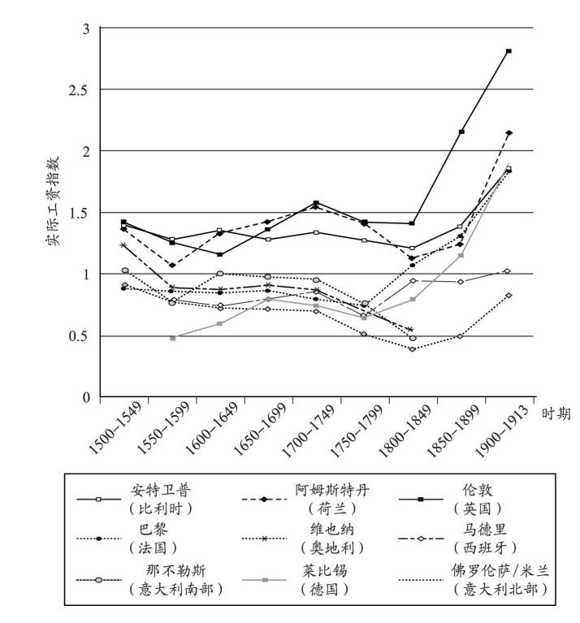

工业革命的影响
- 生产力飞跃：机器大生产取代手工劳动，人类进入蒸汽/电气时代。
- 生产关系变革：现代工厂制度建立，资本主义制度巩固。
- 社会阶级重组：社会日益分裂为工业资产阶级与无产阶级。
- 社会生活巨变：城市化加速，贫富差距、环境问题显现。
- 世界格局重塑：资本主义世界市场最终形成，东方从属于西方。
| 年份 | 约1770 | 约1790～1793 | 约1830～1835 |
|---|---|---|---|
| 数额(百万英镑) | 140 | 175 | 360 |
| 年份 | 1755 | 1797 | 1835 |
|---|---|---|---|
| 指数 | 42.74 | 42.48 | 78.69 |
生产力：简单说就是生产东西的能力。工业革命前靠手工，一天织10米布；革命后用机器，一天能织1000米，这就是生产力的飞跃。
生产关系：就是人们在生产中形成的关系。以前是师傅带徒弟的小作坊，革命后变成老板开工厂、工人打工的模式，这就是生产关系的变革。

▲ 点击图片返回

| 时间 | 国民生产总值总量（10亿美元） | 人均国民生产总值（美元） | ||
|---|---|---|---|---|
| 发达国家 | 第三世界国家 | 发达国家 | 第三世界国家 | |
| 1750年 | 35 | 112 | 182 | 188 |
| 1800年 | 47 | 137 | 198 | 188 |
| 1830年 | 67 | 150 | 237 | 183 |
| 1860年 | 118 | 159 | 324 | 174 |
| 1880年 | 180 | 164 | 406 | 176 |
| 1900年 | 297 | 184 | 540 | 175 |
| 1913年 | 430 | 217 | 662 | 192 |


简单说就是工业革命后，欧洲国家（特别是英国）的经济发展像坐火箭一样，而亚洲、非洲等国家还在原地踏步，贫富差距和发展水平越拉越大。
打个比方：1750年时，英国工人和印度工人的工资差不多，到了1913年，英国工人工资是印度的3倍多，这就是典型的"大分流"。

| 区域类型 | 代表地区 | 1750 | 1830 | 1880 | 1913 |
|---|---|---|---|---|---|
| 工业核心区 | 英国伦敦 | 1.3 | 1.8 | 2.3 | 2.8 |
| 工业核心区 | 德国莱比锡 | 1.0 | 1.2 | 1.8 | 2.2 |
| 农业边缘区 | 意大利那不勒斯 | 0.8 | 0.8 | 0.7 | 0.8 |